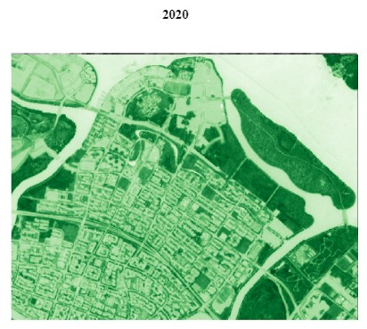
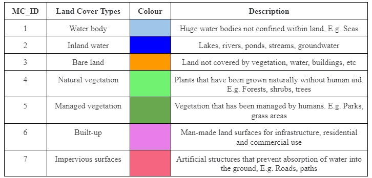

Methodology
The following image shows the approach taken by the team to perform the Land Cover Change Detection analysis.
For our analysis, we used the Semi-automatic classification Plugin (SCP) in QGIS to perform Supervised Classification and Land Cover Change Detection.
Data Collection
Sentinel-2 Satellite Imagery data taken from Copernicus Open Access Hub was used for the analysis. The dates of the dataset used for 2016 and 2020 are 2016/09/23 and 2020/01/26 respectively.
Area Selection
For the purpose of our analysis, we have identified Punggol as our area of interest. There were two reasons for selecting Punggol. First, Punggol has transformed rapidly from its early days as a fishing village to become Singapore’s first eco-town where it is surrounded by rivers and plenty of greenery. Second, the area was free of cloud covers, making it ideal for image analysis. Hence, we are interested in finding out more about changes in vegetation in Punggol over the years and how it has evolved with the changing landscape.
Data Preparation
For better visualisation of Punggol, we will perform image processing on our datasets. This is done by creating True Color (TCC) and False Color Composites (FCC) of Punggol where Sentinel-2 bands 2, 3, 4 and 8 are selected as our bandsets. To create TCC and FCC, ensure that the RGB is set to ‘3-2-1’ and ‘4-3-2’ respectively.
True Color Composite
False Color Composite
NDVI
Normalized Difference Vegetation Index (NDVI) images was also generated with the following formula: NDVI= ( NIR − Red) / (NIR + Red )
NDVI helps to detect and quantify the presence of vegetation by using the reflected light in visible and near-infrared bands. The NDVI output for 2016 and 2020 is as shown below.

Classification Methods
Next, we created seven land cover classes.
| Land Cover Types | Description |
|---|---|
| Water body | Huge water bodies not confined within land, E.g. Seas |
| Inland water | Lakes, rivers, ponds, streams, groundwater |
| Bare land | Land not covered by vegetation, water, buildings, etc |
| Natural vegetation | Plants that have been grown naturally without human aid. E.g. Forests, shrubs, trees |
| Managed vegetation | Vegetation that has been managed by humans. E.g. Parks, grass areas |
| Built-up | Man-made land surfaces for infrastructure, residential and commercial use |
| Impervious surfaces | Artificial structures that prevent absorption of water into the soil, E.g. Roads, paths |
Training and Testing Data Selection
As part of Supervised Classification, identification of training samples needs to be done prior to performing classification. Using the color composite images created previously, we digitised the Region of Interests (ROI) for training data. When digitising the ROI, it is important to ensure that the size of the polygon is small and spread evenly across the area. The legend of the training samples are as shown below:
| MC ID | C ID | Name |
|---|---|---|
| 1 | 1 | Water body |
| 2 | 2 | Inland water |
| 3 | 3 | Bare land |
| 4 | 4 | Natural vegetation |
| 5 | 5 | Managed vegetation |
| 6 | 6 | Built-up |
| 7 | 7 | Impervious surfaces |
Training Sample
The same process is repeated later on for selecting the testing sample. However, we need to ensure that the testing data does not overlap with the training sample.
Once the training data has been completed, we will manually change the colours of the ROI so that it is more intuitive. As shown below, land cover types such as water body and inland water are similar, thus both were changed to Blue while vegetation such as natural and managed vegetation are colored Green. This makes the interpretation of the classification output more comprehensible.

Next, Supervised Classification is performed using the SCP plugin and the result of the classification output for 2016 and 2020 is as shown below.
Classification Accuracy Assessment
Accuracy assessment is an important part of classification. The metrics that we looked at when performing the accuracy assessment are namely; User’s Accuracy, Producer’s Accuracy, Overall Accuracy and Kappa Statistic. The minimum accuracy level for a reliable classification should be at least 85%. After many iterations, we managed to obtain an overall accuracy of 86% and 72% for 2016 and 2020 respectively.
Change Detection
Lastly, once we have generated the land cover classification for 2016 and 2020, we performed the Land Cover Change Detection which overlays the two maps to identify changes in land cover. From the 49 cross classes identified, we changed the colours to represent changes in vegetation. Purple represents increased vegetation, Yellow represents reduced vegetation, Green represents unchanged vegetation and Black represents non-vegetated areas.
The final output showing the changes in vegetation in Punggol from 2016 and 2020 is shown below.